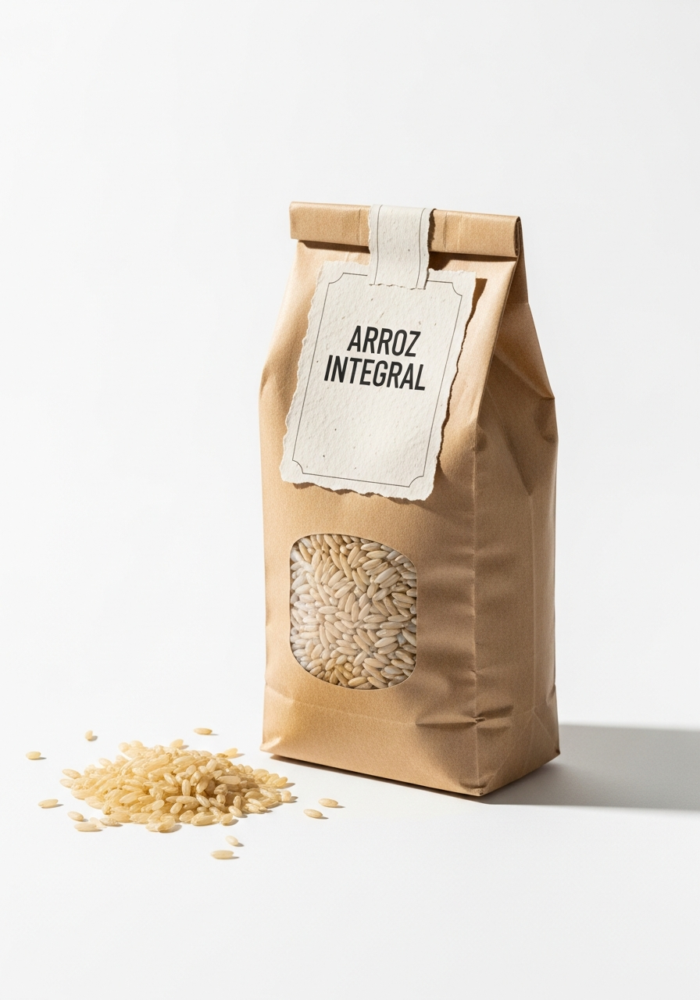

Arroz Integral
📦 Envase · 1 kgConserva el salvado y el germen del grano intactos, aportando significativamente más fibra, vitaminas del grupo B y minerales que el arroz blanco. Sabor más profundo y textura firme. La opción más nutritiva y natural de nuestra gama de arroces.
¿Para qué se usa?
Características & Beneficios
Datos del producto
Por qué elegirlo
3 veces más fibra
Comparado con el arroz blanco. La fibra favorece el tránsito intestinal y la sensación de saciedad.
Más vitaminas y minerales
Vitaminas del grupo B, magnesio, fósforo y zinc en mayor concentración que el arroz refinado.
Índice glucémico más bajo
Libera energía de forma gradual. Saciedad más prolongada, ideal para dietas equilibradas.
Sin conservantes
Solo arroz integral en su estado más natural. Sin aditivos, sin colorantes.
Ficha técnica
| Peso neto | 1 kg |
| Variedad | Integral (grano entero con salvado) |
| Origen | Selección |
| Tiempo de cocción | 35–40 minutos |
| Categoría | Natural |
| Formato de venta | Bolsa kraft con ventana y cierre zip |
| Conservación | Lugar fresco y seco, alejado de la luz directa |
| Sin | Conservantes · Colorantes · Gluten |


¿Interesado en distribuir este producto?
Contacta con nuestro equipo para solicitar información sobre precios, formatos y condiciones de distribución.